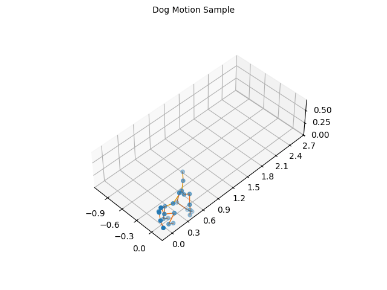
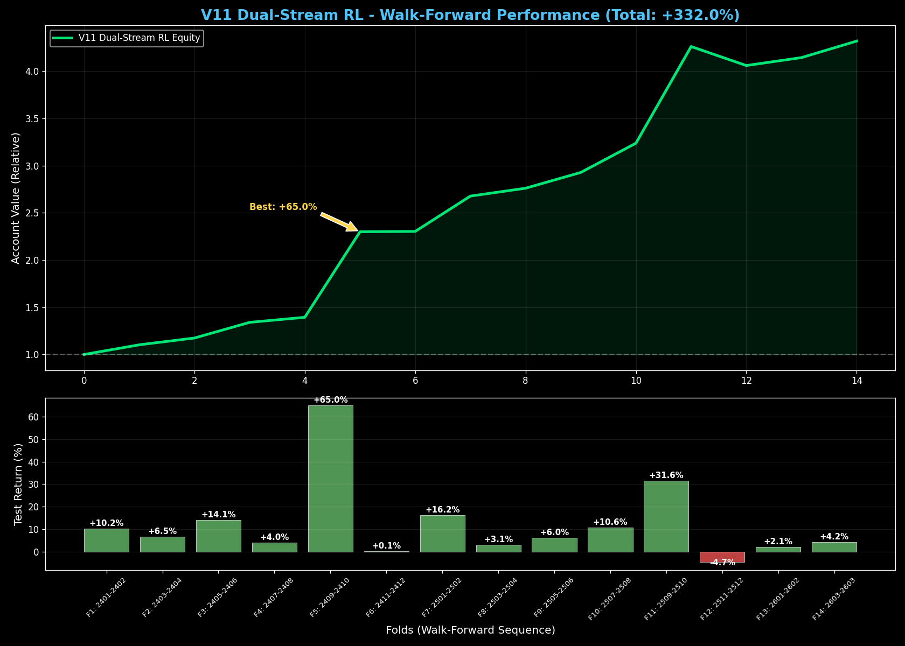
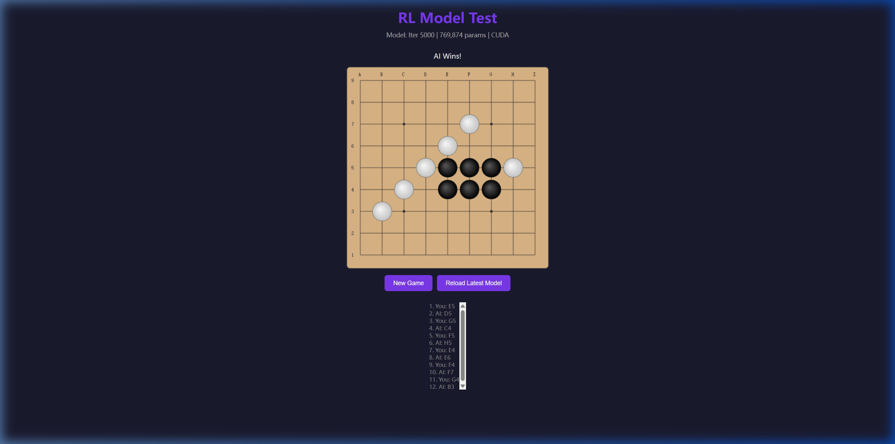
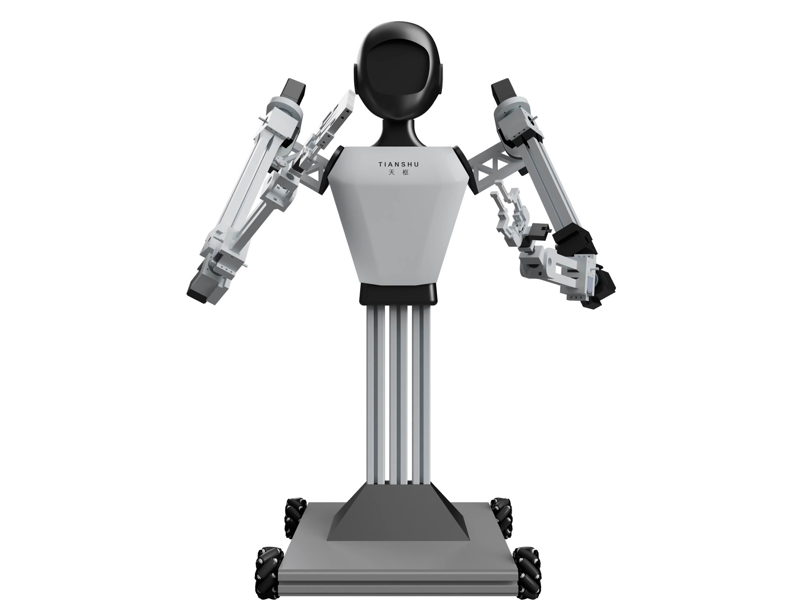
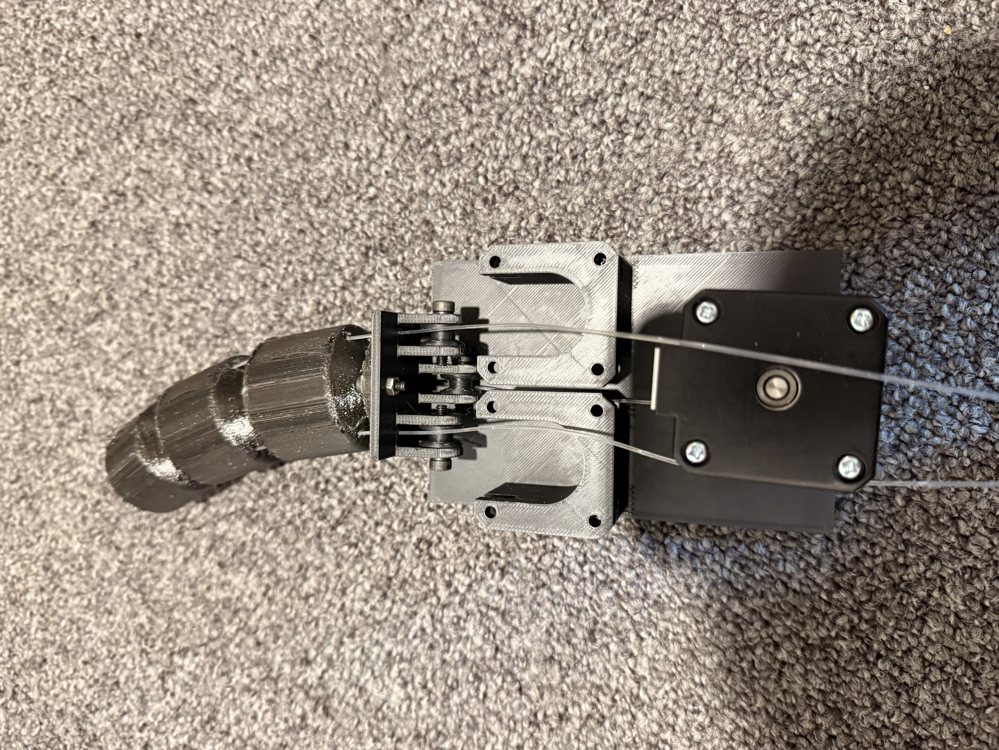
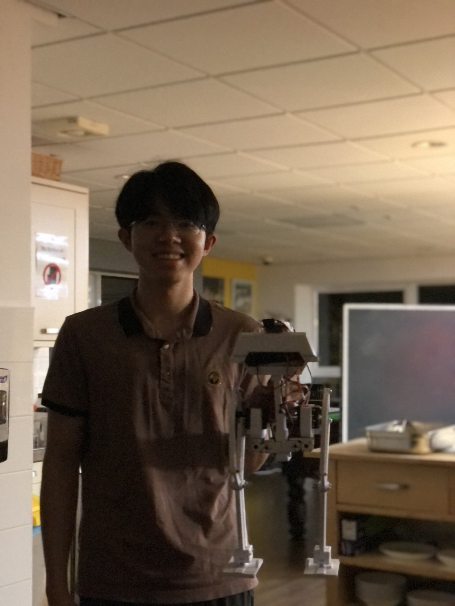
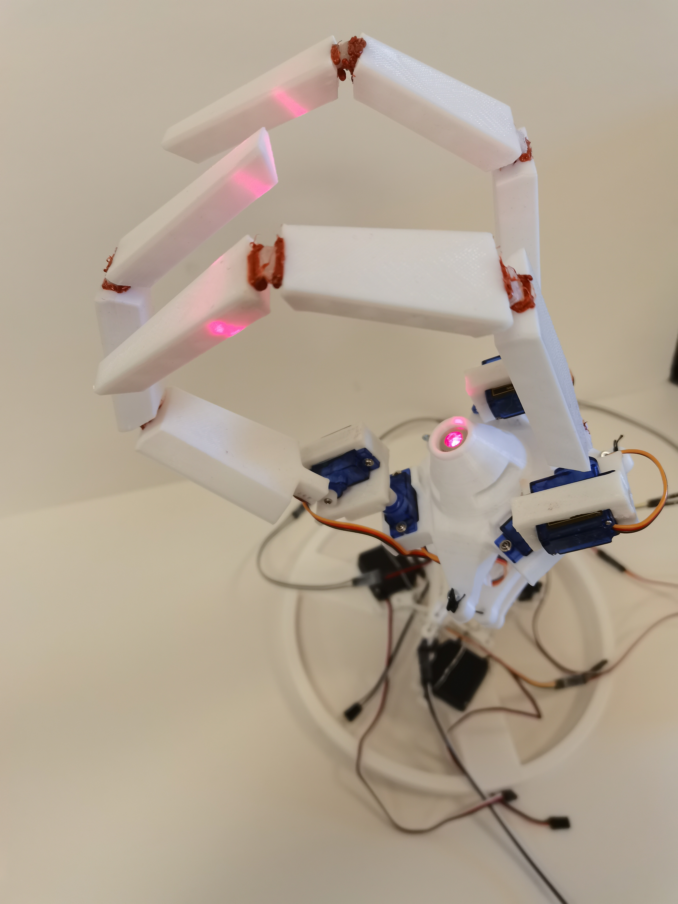
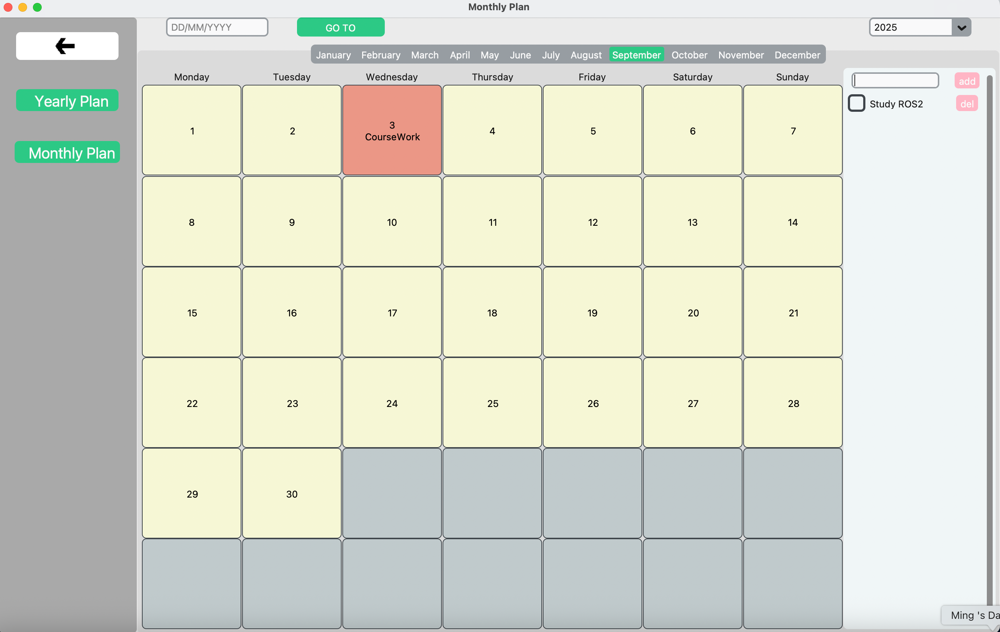

Projects
A selection of robotics, AI and systems projects — from physical prototypes to large‑scale simulation and multi‑agent systems.
Multi‑Robot Cooperative Pursuit Simulation
Built an Isaac Lab simulation in which a team of Unitree quadrupeds locate, track, encircle and intercept targets in complex terrain, using an Auction Algorithm and multi‑agent RL for task allocation and cooperative behaviour.
View Details
Quadruped Motion Diffusion Gait Generation
Trained a Motion Diffusion model that conditions on a gait label to generate joint trajectories for a quadruped, then evaluated stability, executability and noise robustness in simulation.
View DetailsOpenClaw Multi‑Agent Stock Analysis Platform
Built a multi‑agent stock analysis platform on OpenClaw Skills covering information retrieval, risk analysis, opinion division and conclusion synthesis, with structured agent collaboration and tool‑use orchestration.
View Details
A‑Share Limit‑Up & Main‑Wave Predictor
Multi‑task LSTM‑Attention encoder fused with XGBoost / LightGBM / CatBoost for next‑day limit‑up and main‑wave prediction. Top‑1% main‑wave hit rate of 62.5% on 2025–2026 holdout, a 9.2× lift over baseline.
View DetailsA‑Share Transformer Stock Predictor
Pre‑LN Transformer with causal masking that fuses MA / MACD / KDJ / RSI / BOLL / OBV / WR indicators and Shanghai Composite context to forecast next‑day returns on the A‑share main board.
View Details
Gomoku AlphaZero RL Agent
Self‑play AlphaZero‑style agent on a 9×9 board: a 5‑residual‑block ResNet policy/value network (~2M params) guides MCTS with PUCT, trained with 8‑symmetry data augmentation and a replay buffer.
View Details
TianShu – Half Humanoid with Mecanum Wheels
Designed a mecanum‑wheel half‑humanoid for industrial automation with dual 7‑DOF arms, grippers, object detection and defect inspection.
View Details
OmniDexter – Tendon‑driven Wrist and Gripper
Designed a 3‑DOF tendon‑driven wrist with a 2‑DOF underactuated gripper using concentric layers for continuous rotation, pitch/yaw and grasping. Presented at the UK 6th Robotic Manipulation Workshop.
View Details
Robot Dog Tail
Designed a robotic tail attachment for the Unitree Go2 to express mood through motion patterns.
View Details
Bipedal Robot
Designed a robot with three degrees of freedom per leg, implemented inverse kinematics and performed failure analysis.
View Details
Doctor Octopus Robotic Arm
Designed a 2‑DOF tendon‑driven arm with a 6‑DOF claw capable of grasping spherical or cylindrical objects.
View Details
Medical Reminder Box
Built an automated pill dispenser with a child‑lock and remote notifications for missed doses.
View Details
Planning App
A modular Python planner supporting yearly, monthly and daily views, built with object‑oriented techniques.
View Details